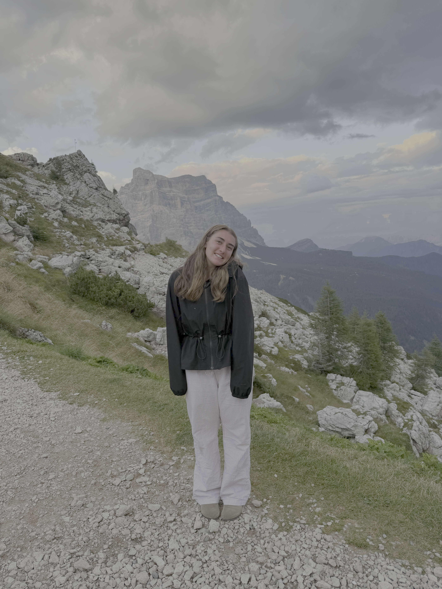

Welcome to My Hiking Website

HELLOOOO I am Alyssa Buraks, a student at Northeastern University studying computer science & business. When I'm not doing school work, you can find me outside in the mountains (skiing & hiking). Hiking has always been a passion of mine, but over time it became one of the biggest parts of who I am. There is something about reaching a summit after a long climb that makes every other challenge feel more manageable.
I grew up exploring local woods outside of Philly, but living in Boston has given me the chance to discover the White Mountains!!
Contact Me
- Email: buraks.a@northeastern.edu
- GitHub: github.com/alyburaks
- LinkedIn: linkedin.com/in/alyssa-buraks